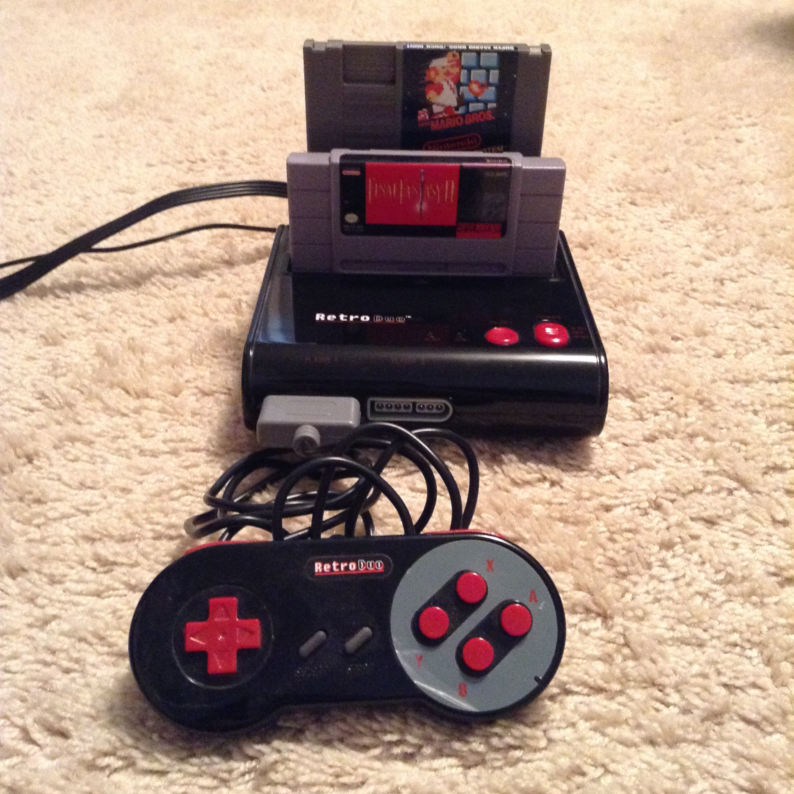

Retro Duo Review
September 29th 2015
The Retro Duo is a console clone developed by Retro-Bit for North America. The Retro Duo is designed to play both Nintendo (NES) and Super Nintendo (SNES) games. But, is it worth buying the console? I'm going to explain the perks of this console and see if it's worth buying instead of a NES and a SNES.
Features: The Retro Duo has two ports, one is for the 8-bit NES games and the other is for the 16-bit SNES games. The cartridges may wobble a bit when inside the console, although you should be fine as long as you are not shaking the console while playing the games.
The console comes with two controllers, S-video cables and power supply. The console can switch between NES and SNES games by a switch with the off button in the middle. The console if very small (37.5cm x 20xm x 12.5xm) so if you are needing to conserve space you may want to consider this instead of buying two full sized consoles.
Game Compatibility: The Retro Duo has one of the largest compatibilities of any console clone on the market. I had no problems running any of my own games and incompatible game lists online seem to be very small. The console will even run games like Star Fox and Doom that have special processing chips. Also, the Super Game Boy worked so you can play your old Game Boy games too.
The Retro Duo is compatible with European and Japanese Super Nintendo games with a few exceptions. Japanese Famicom (NES in Japan) games are an not compatible because there is a varying of cartridge pins between countries. The original SNES console can run Japanese games with some slight modification, however, if you don't want to modify your SNES or import an expensive Japanese console the Retro Duo is an affordable alternative to play Japanese imports. There is an adapter sold separately that will allow you to play Sega Genesis games as well.
TV Compatibility: I was able to test the Retro Duo on several televisions with little problem. While testing on a CRT television the quality looked decent and as good as the original console. I was surprised that even on a 55 inch flat screen the quality looked even better. I did have some problems on a Panasonic 32 inch flat screen with the SNES games only. The screen was black and white and seemed to have a wave of static flowing over it (that's the best I can describe it). The problem was making the SNES games almost unplayable, so you may be taking a risk if you only have one television by buying this console.
The console comes with S-Video cables. S-Video is supposed to have a slightly better picture than composite video. I found that it did not help at all and on some televisions made the quality worst. The good part is that you can simple only use only the RCA cables.
Controllers: The Retro Duo controllers are clones of the SNES controllers. The controller is also used to play the NES games but you'll need to adjust your mind to play with different A and B buttons.
When I picked up the Retro Duo controller I had never used a SNES controller before. I found that it was good for playing with but felt cheap. After a while one of them broke, but it endured a lot of use. Eventually I got my hands on a SNES console and felt a huge improvement in controllers. I would suggest that if you buy the Retro Duo you invest an extra five or ten bucks into a real SNES controller.
Conclusion: One problem in the concept of a console clone is that if you are not going to play on a real console, why not just play emulated games? Most of the popular NES and SNES games are available on modern consoles via download or they can be emulated on computers. The Retro Duo will probably be good for someone who is into collecting cartridges or who is just starting to collect video games. The console also is small, simple and will be good for someone who travels or plays in changing locations. Cost is also a factor as a single brand new Retro Duo will cost less than either the NES, SNES or Super Famicom (Japanese SNES). Overall, the hardware is pretty solid and reliable so if it looks like it fits your needs I would recommend it for you.